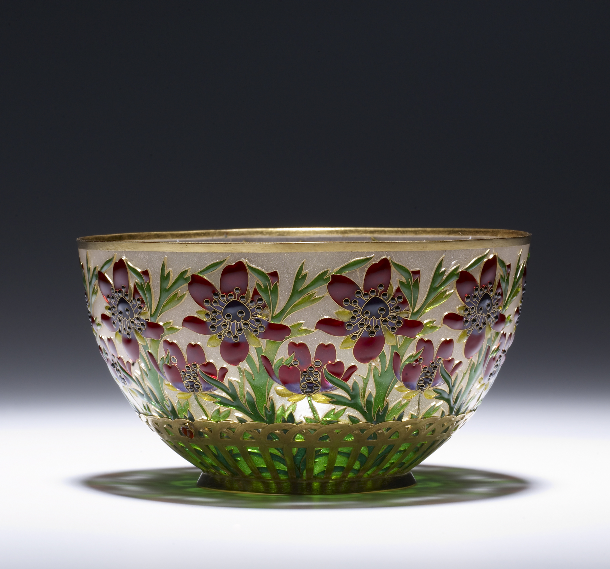

Thesmar began his career designing textiles but was later employed as an enameler.
Because of their extreme fragility, few of his works survive. On the base of this cup is an enameled beetle.
Read more: Cup with Poppies